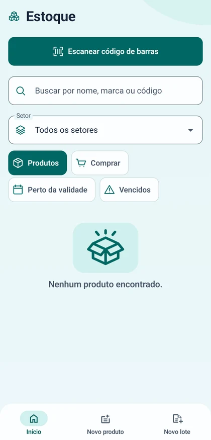
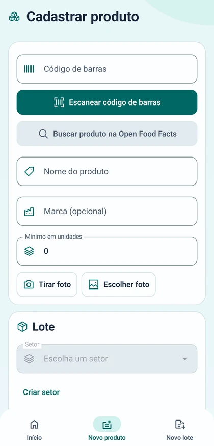
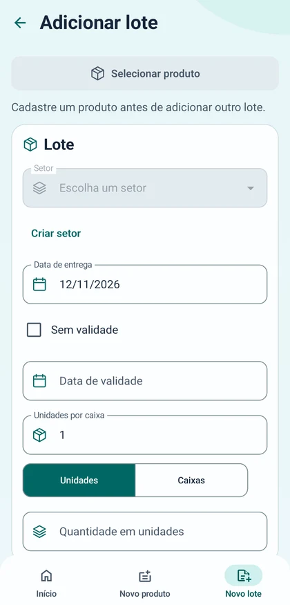
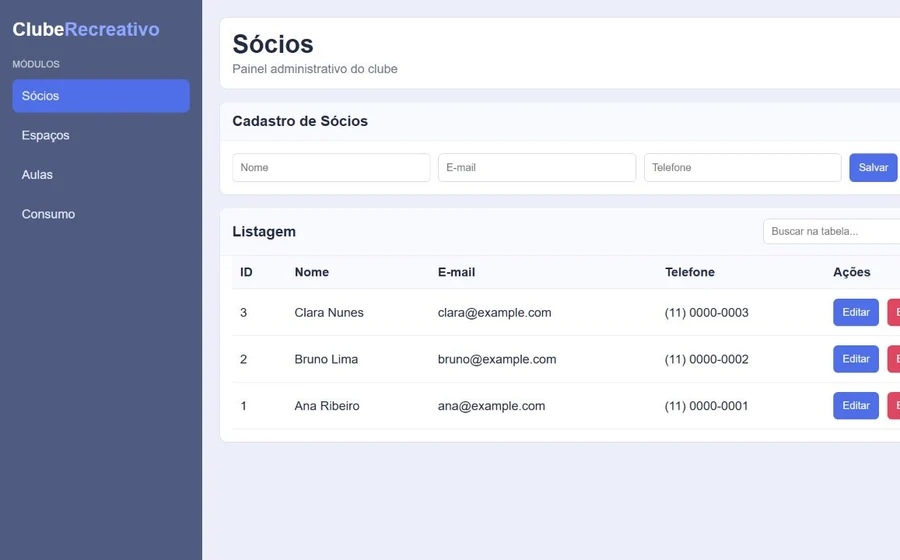
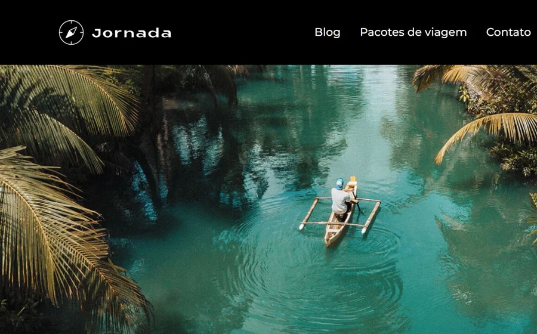

Android · Projeto em equipe
Movimenta
App acadêmico para pequenos e médios mercados controlarem o estoque. Permite cadastrar por código de barras, organizar lotes por setor e acompanhar prazos de validade.



São Paulo, Brasil
Estudante de Engenharia da Computação com foco em desenvolvimento full stack e automação.
Android · Projeto em equipe
App acadêmico para pequenos e médios mercados controlarem o estoque. Permite cadastrar por código de barras, organizar lotes por setor e acompanhar prazos de validade.



GET /products?name=Caneca
200 OK
[{
"id": "a94fb049-ab21-4f72-b597-641a6da01a4e",
"name": "Caneca",
"description": "Cerâmica, 300 ml",
"price": 29.9
}]Backend · API REST
API para cadastrar, buscar, atualizar e excluir produtos de um catálogo, com persistência via Spring Data JPA.

Full stack · Aplicação web
Painel para administrar sócios, espaços, aulas e consumo em um clube, com operações de cadastro, consulta, edição e exclusão.

Frontend · Site responsivo
Site de estudo para uma agência fictícia, com páginas de destinos, pacotes e contato que se adaptam ao celular e ao desktop.
Jan – dez 2024
Automatizei formulários operacionais da linha de produção com Excel e VBA e ajudei a atualizar as bases de dados da operação.
Conclusão prevista · dez 2027
Centro Universitário Fundação Santo André.
Hackathon · 2026
Participei da equipe reconhecida pela solução com inteligência artificial.